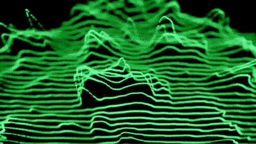

Ode to 2011 NSFW
Экплицит, так сказать, контент. Но как круто сделано от начала и до конца!
Экплицит, так сказать, контент. Но как круто сделано от начала и до конца!


On The Shelf by Michael Craig-Martin.
I'm writing to let you know that TaskPaper 2.2.3 is now available in the Mac App Store, and for a limited time you can get it for $4.99. It will switch back to $29.99 on Friday, April 8th. Click here to buy TaskPaper in the Mac App Store for $4.99.
А я за него неделю назад двадцатку заплатил, бл&#%!

Не знаю, что это за чувак, но каждый его пост просматриваю с огромным удовольствием)

Ветряки в марте 2011 года обеспечили 21 процент потребностей Испании в электричестве и впервые вышли на первое место среди источников электроэнергии в стране.
Это очень круто, конечно.
Картинко отсюда
Еще бы полный трек (если существует) к содержимомому этого твита найти!
А SizeUp умеет двигать сфокусированное приложение в другой спейс!

Говорят, у него все книги так оформлены! Но к этой есть еще и короткометражный мультфильм.